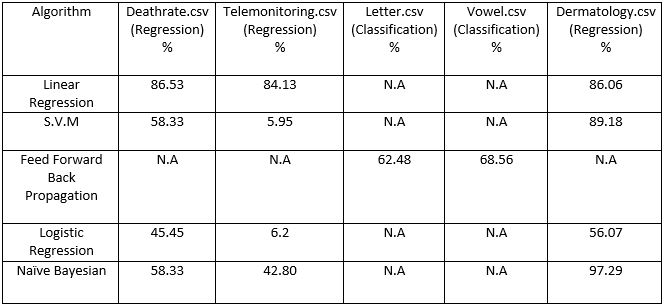
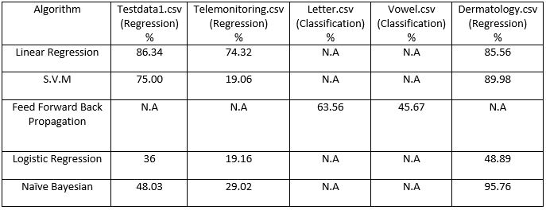

Online Prediction Analysis Tool
Home
About Predictive Analytics
Feature Reduction
Decision Trees
Register
Login
Predict
Contact
Accuracy of algorithms before Feature Reduction:

Accuracy of algorithms after Feature Reduction:
